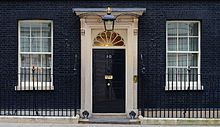

La administración de Londres está compuesta por dos niveles: uno estratégico a escala de toda la ciudad y otro local. La administración de la ciudad es coordinada por la Autoridad del
Gran Londres (GLA por sus siglas en inglés) y la administración local es gestionada por otras 33 autoridades menores.78 La GLA está formada por dos organismos electos: el alcalde de
Londres, que tiene poderes ejecutivos, y la Asamblea de Londres, que supervisa las decisiones del alcalde y puede aprobar o rechazar sus propuestas presupuestarias anuales. La sede del
GLA es el Ayuntamiento, ubicado en Southwark, y el alcalde actual es el laborista Sadiq Khan. La estrategia de planificación del alcalde se publicó con el nombre de «London Plan».79 Las
autoridades locales son los consejos de los 32 municipios de Londres y la Corporación de la City de Londres,80 responsables de la mayoría de servicios como escuelas, servicios sociales,
mobiliario urbano y recogida de basuras. Algunas funciones, como la gestión de residuos, se proporcionan a través de acuerdos conjuntos.
La policía del Gran Londres, con la excepción de la «City», es la Policía Metropolitana de Londres, dependiente de la Autoridad de la Policía Metropolitana. La «City de Londres» tiene su
propio cuerpo policial, la Policía de la City de Londres. Por su parte, la British Transport Police se ocupa de la seguridad en el transporte ferroviario y el metro de la ciudad.
La London Fire Brigade es el servicio de bomberos del Gran Londres, depende de la London Fire and Emergency Planning Authority y es el tercer servicio de bomberos más grande del mundo.
Del parque de ambulancias del Servicio Nacional de Salud se ocupa el Servicio de Ambulancias de Londres, que es el mayor servicio de ambulancias gratuitas de todo el mundo.84 Las
Ambulancias Aéreas de Londres operan en conjunción con el LAS. De la seguridad en el río Támesis se encargan los Guardacostas de Su Majestad y la Royal National Lifeboat Institution.
Gobierno Nacional

Londres es la sede del Gobierno del Reino Unido, ubicado alrededor del Palacio de Westminster. Muchas de las dependencias del gobierno se encuentran cerca del Parlamento, especialmente
a lo largo de Whitehall, donde se halla la residencia del Primer Ministro, en el número 10 de Downing Street.86 El Parlamento del Reino Unido ha sido y es ejemplo para muchos otros
sistemas parlamentarios de todo el mundo.87 En el parlamento británico hay 73 miembros de Londres, representantes de los distritos electorales locales en la Cámara de los Comunes del
Reino Unido.